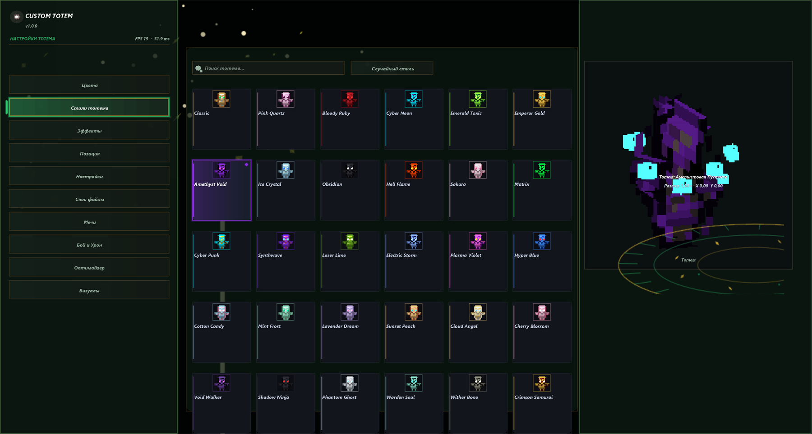
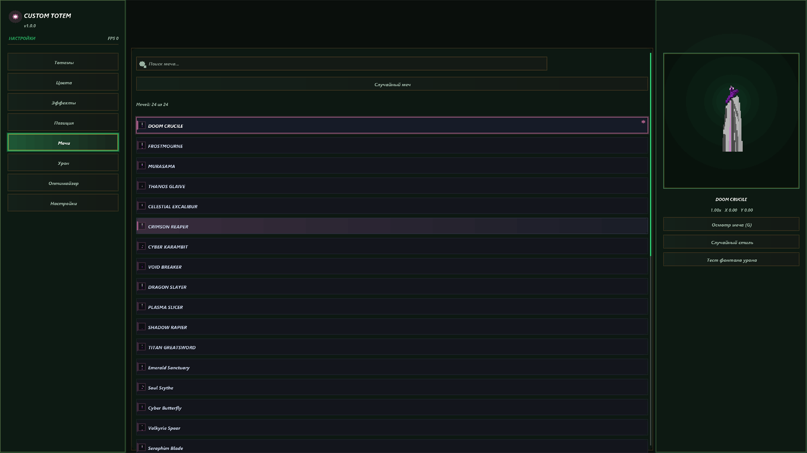
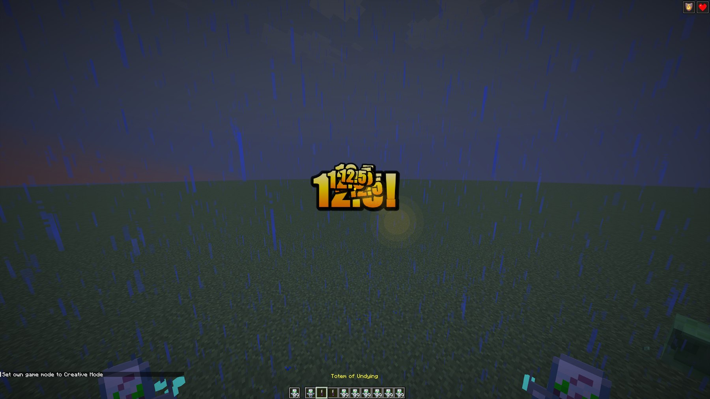
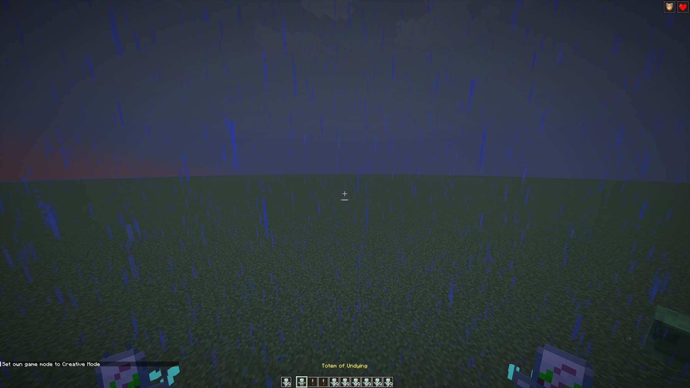
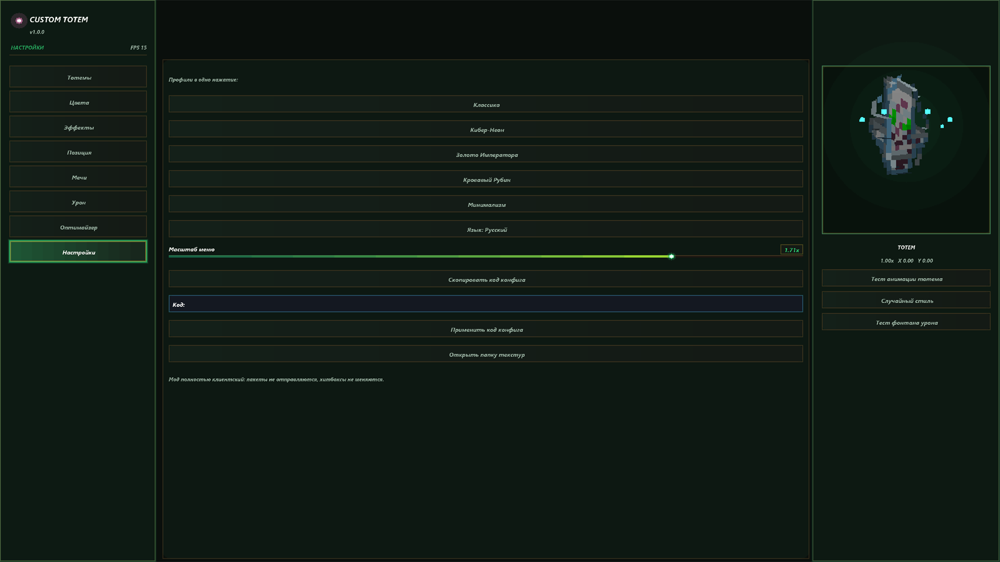
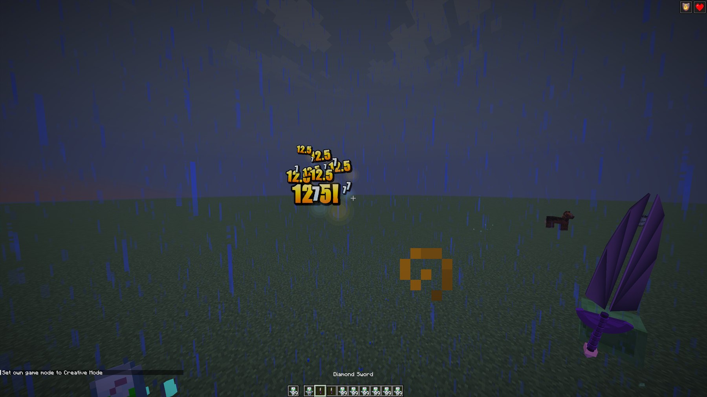

100% Anti-Cheat Safe
Полностью клиентский визуал. Мод не регистрирует ни одного кастомного пакета, не меняет хитбоксы, видимость предметов и ввод. Безопасен для проверок на FunTime, HolyWorld и ReallyWorld.
Максимальный буст FPS, 24 кастомных 3D-меча, 48 стилей тотемов, урон как в Unreal Engine и легальная работа на FunTime, HolyWorld и ReallyWorld.

Мод меняет только картинку у вас на экране: ни пакетов, ни макросов, ни подмены игровых таймингов.
Полностью клиентский визуал. Мод не регистрирует ни одного кастомного пакета, не меняет хитбоксы, видимость предметов и ввод. Безопасен для проверок на FunTime, HolyWorld и ReallyWorld.
Отсечение лишних частиц, теней, бликов, анимаций блоков и объёмных облаков. Пресеты «УЛЬТРА FPS» и «PvP БАЛАНС» — до 600–1700+ FPS в замесах.
Тёмное лесное меню с текстурой дерева, светлячками и пружинной физикой, живое 3D-превью тотема и меча — как в дорогих шутерах.
Никаких подписок и платных ключей. Открытый релиз на Modrinth, лицензия MIT, все стили и мечи доступны сразу.
Четыре больших направления, объединённые в одном клиентском моде.
От Классики до Аметистовой пустоты, Киберпанка и Клинка Сакуры — с палитрами, свечением глаз и собственными PNG.
Готовые пресеты: Классика, HD Классика, Демон, Ангел, Киберпанк, Призрак, Коса Смерти, Кристалл Энда, Дракон, Корона, Минимализм PvP и другие.

Процедурная 3D-геометрия, а не текстуры: Керамбит-Коготь, Нож-Бабочка, Коса Смерти, Катана Сакуры и Молот-Меч Титана.
Клинок Хаоса, Ледяная Скорбь, Катана Мурасама, Меч Таноса, Экскалибур Архитектора, Кровавый Жнец, Кинжал Ассасина, Посох-Копьё Валкирии и другие.

Цифры урона вылетают из цели объёмным шрифтом с собственной текстурой — без задержек и без влияния на игру.
Фонтан светящихся чисел урона, настраиваемый размер, цвет и стиль отрисовки. Всё считается на клиенте, поэтому сеть не страдает.

Два пресета, 18 переключателей производительности и тёмное лесное меню с живым 3D-превью в стиле UE5.
Скриншоты сделаны на текущей версии мода 1.0.0 — без ретуши и без фотошопа.


Если что-то осталось неясным — мод открыт, исходники и лог на вашей стороне.
.minecraft/mods.config/customtotem.json и не сбрасываются после перезапуска игры.